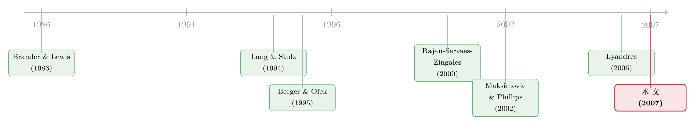

捆在一起发债：多元化折价里，被忽略的那条「竞争」暗线
本文读的是 Lyandres (2007, Review of Financial Studies)：多元化公司（conglomerate）之所以被折价，未必是因为代理冲突、也未必是因为「能力本来就差」。真正的机制是——它只能给整个集团发一种债，于是失去了为每个业务部门「量身定制」资本结构、从而最优地利用「债务的战略价值」的能力。被迫采用次优的产品市场策略，价值就这样漏掉了。作者把这块损失命名为多元化的战略成本（strategic cost of diversification）。
1 一个老问题，和一个不肯散去的疑团
多元化公司到底值不值钱，这场争论已经打了很多年。
早期的证据几乎一边倒：Lang and Stulz (1994)、Berger and Ofek (1995)、Lins and Servaes (1999)、Klein (2001) 都发现，平均而言，跨行业经营的集团相对它们的单一业务对手是被折价的。后来的研究又把这个结论搅浑了——Campa and Kedia (2002)、Villalonga (2003, 2004) 指出，一旦小心地控制住「选择去多元化」这件事本身的内生性，折价会大幅缩水，某些样本里甚至翻成了溢价。
但有一件事，无论站在争论的哪一边都没人否认：多元化公司之间的横截面差异极大。有的集团深度折价，有的集团却享受着可观的溢价。问题于是从「平均是折是溢」变成了一个更尖锐的版本——
为什么同样是多元化，命运却如此不同？
过去的答案，基本可以归成两类。第一类讲成本与收益的权衡：多元化能带来规模经济、平滑税负、扩大内部资本市场以缓解 Myers (1977) 的投资不足、降低破产概率（Lewellen, 1971）、甚至帮助某个部门去掠夺对手（Bolton and Scharfstein, 1990）；与此同时，它也滋生代理问题——自由现金流的滥用（Jensen, 1986）、经理人的风险厌恶（Amihud and Lev, 1981）、部门经理的寻租与扭曲投资（Scharfstein and Stein, 2000；Rajan, Servaes and Zingales, 2000）。折价或溢价，取决于这两边谁更重。
第二类答案更狠：是「差公司」才去多元化。Burch, Nanda and Narayanan (2004) 说竞争地位弱的公司才选择多元化，Gomes and Livdan (2004) 说生产率低的公司更可能多元化，Maksimovic and Phillips (2002) 说一家公司在某行业回报下降时才会挤进别的行业。折价不过是这些公司本来就便宜的投影。
但这条路有个尴尬：经验上，多元化公司未必「天生就差」。Lang and Stulz (1994) 没找到多元化公司业绩更差的证据，Schoar (2002) 甚至发现多元化公司更有生产率。如果多元化的公司事前并不差，折价又从哪儿来？
本文的野心，正是在这两类答案之外，给出第三种——一种既不依赖代理冲突、也不依赖事前劣势的折价来源。在作者的模型里，经理人完全为股东服务（无代理问题），各业务部门的价值函数和它们的单一业务对手一模一样（无事前劣势），可集团的合并价值依然低于这些对手之和。
折价是「凭空」冒出来的。它从哪儿来？
2 先讲清楚一件事：债，为什么会有「战略价值」
要理解这篇论文，得先接受一个也许有点反直觉的命题：负债本身可以是一种竞争武器。
这条线索来自一支始于 Titman (1984)、Brander and Lewis (1986)、Poitevin (1989) 的文献——有限责任 (limited liability) 如何把公司的财务结构和它在产品市场上的行为绑在一起。逻辑是这样的：公司一旦借了债，在破产状态下，资产全归债权人；而为股东服务的经理人，在选择产品市场策略时，只会盯着公司还活着的那些状态，对破产状态里的损失视而不见。于是，债务就成了一份「预先承诺」——承诺自己会在产品市场上打得更凶。如果这种「更凶」恰好能逼退对手、为自己腾出空间，那么债务就带来了战略收益（strategic benefit of debt）。
接着，一个自然的问题是：这份战略收益有多大？
答案藏在对手有多在乎你这件事上。如果你的策略对对手的利润几乎没影响，那你「打得凶一点」也吓不到谁，债的战略价值约等于零；反过来，你和对手越是互相牵制，债的战略价值就越大。作者用一个互动参数（interaction parameter） \(r\) 把这件事量化了，\(-1 < r < 1\)。\(r\) 的绝对值越大，两家公司的策略对彼此价值的影响越深。
这就引出了模型的第一块基石。
3 模型（一）：单一行业里，竞争如何决定杠杆
3.1 设定
一期、两阶段的博弈。第一阶段，两家公司同时选择各自到期债务的面值 \(F_i\)（\(i=\{1,2\}\)），债务按公允价格定价，发债所得立刻分给股东。第二阶段，公司们观察到彼此的债务水平后，同时选择产品市场策略 \(c_i \in (F_i, 1]\)。
Assumption 4 给出了现金流的分布——这是整个模型的引擎。公司 1 以概率 \(1 - c_1 - r c_2\) 拿到现金流 \(c_1\)，以概率 \(c_1 + r c_2\) 拿到 \(0\)（即违约）：
$$ \text{cash flow of firm 1} = \begin{cases} c_1, & \text{w.p. } 1 - c_1 - r c_2 \\[2pt] 0, & \text{w.p. } c_1 + r c_2 \end{cases} $$
怎么理解这个 \(c_i\)？它同时干了两件事：\(c_i\) 越大，活下来时拿到的现金流越高，但违约的概率也越高。所以 \(c_i\) 就是策略的「激进程度」——一个更激进的策略，是用更高的破产风险去换更高的潜在回报。而且 \(c_i\) 还透过 \(r\) 影响对手的违约概率：若竞争是策略替代（\(r>0\)），我越激进，对手越容易倒下。
等价地，可以想成每家公司面对一个均匀分布在 $[0,1]$ 上的随机冲击 \(z_i\)，选择 \(c_i\) 就等于选择了一个生存门槛，公司 1 的违约门槛与违约概率为
$$ T_1 = \mathrm{prob}(z_1 < T_1) = c_1 + r c_2. $$
无风险利率为零、风险中性、债务公允定价（Assumption 5），于是公司 1 的债、股、合并价值分别是：
$$ D_1 = [\,1 - c_1 - r c_2\,]\,F_1 \tag{1} $$
$$ E_1 = [\,1 - c_1 - r c_2\,]\,[\,c_1 - F_1\,] \tag{2} $$
$$ V_1 = [\,1 - c_1 - r c_2\,]\,c_1 \tag{3} $$
公司 2 对称。
现在请盯住第 (2)、(3) 两式的差别——这就是整篇论文的引擎室。
关键就在 \(a2\)：第二阶段经理人最大化的是股东价值 \(E_1\)，而不是公司总价值 \(V_1\)。两者只差一个 \(F_1\)。\(F_1\) 越大，经理人越不在乎「活下来拿到的那点现金流」，越敢把 \(c_1\) 推高——债务把经理人的目标函数往激进方向掰了一下。这就是有限责任的战略承诺，被写进了一行代数里。
3.2 一步步解这个博弈
用逆向归纳求子博弈完美均衡。第二阶段，公司 1 在给定对手策略 \(c_2\) 与自己已发的债 \(F_1\) 下，对 \(c_1\) 最大化 \(E_1\)：
$$ c_1^*(c_2, F_1) = \arg\max_{F_1 \le c_1 \le 1}\; \big(\,[1 - c_1 - r c_2][c_1 - F_1]\,\big) \tag{4} $$
把 (2) 对 \(c_1\) 求导，令其为零：
$$ \frac{\partial E_1}{\partial c_1} = 1 + F_1 - 2 c_1 - r c_2 = 0 \;\;\Longrightarrow\;\; c_1 = \frac{1 + F_1 - r c_2}{2}. $$
这就是操作策略上的反应函数。这里已经能直接读出战略效应了：\(\partial c_1 / \partial F_1 = 1/2 > 0\)——自己的债越多，自己打得越凶；而 \(\partial c_1 / \partial c_2 = -r/2\)——若 \(r>0\)（策略替代），对手越凶，我越收敛。两家公司的反应函数相交，定出第二阶段均衡策略 \(c_1^*(F_1,F_2)\)、\(c_2^*(F_1,F_2)\)。
顺带留意一个漂亮的恒等式：把 FOC 整理一下，\(1 - c_1 - r c_2 = c_1 - F_1\)，也就是「生存概率」恰好等于「股东残值」。代回 (3)，均衡时 \(V_1 = (c_1 - F_1)\,c_1\)。
第一阶段，公司 1 在预见到上述第二阶段反应的前提下，对自己的债 \(F_1\) 最大化总价值 \(V_1\)（注意这里是 \(V_1\) 不是 \(E_1\)——因为债已公允定价，发债所得已分给股东，事前公司选 \(F_1\) 时考虑的是整体价值）：
$$ F_1^*(F_2) = \arg\max_{F_1 \ge 0}\; \Big(\,\big[\,1 - c_1^*(F_1,F_2) - r\,c_2^*(F_1,F_2)\,\big]\,c_1^*(F_1,F_2)\,\Big) \tag{5} $$
两条债务反应函数相交，定出第一阶段均衡杠杆。把这套两步最大化解到底，就得到本文的第一个核心结论。
命题 1（Proposition 1）：存在唯一稳定的债务均衡；公司的均衡杠杆率随互动参数的绝对值 \(|r|\) 递增；当 \(r \to 0\) 时，均衡债务面值与杠杆率趋于零。
直觉非常干净：\(|r|\) 衡量了「我的策略能在多大程度上撬动对手的价值与选择」，无论竞争是策略替代还是策略互补都成立。\(|r|\) 越大，债的战略收益越大，于是均衡杠杆越高。当公司之间互不相干（\(r\to0\)），债没有任何战略价值，杠杆归零。
这个结论要谨慎解读。作者明确假设了「债越多 → 自己的策略越激进」。在 Showalter (1995) 的价格竞争、Schuhmacher (2001) 的产能-价格竞争的某些参数下，债反而会降低激进程度、构成战略劣势、均衡里没人发债。本文不处理那种情形——这也是后面为什么要把模型限制在「策略替代」上的原因。
到这里，作者其实复刻并精炼了他自己更早的工作 Lyandres (2006)，那篇文章用类似的代理变量在数据里验证了「行业竞争互动越强、最优杠杆越高」。有了这块经过检验的基石，真正的好戏才登场。（关于「产品市场竞争如何反过来塑造财务决策」这条暗线，也可参见《高贴现率，为什么会逼着对手「打价格战」？》。）
4 模型（二）：当两个行业被装进同一家公司
4.1 反转出现的地方
现在把单一行业拼成两个。Assumption 6-9：限定在策略替代（这样命题 1 才稳健）；有两个行业 A、B，互动参数 \(0 < r_A < 1\)、\(0 < r_B < 1\)；每个行业两家公司——A1、A2、B1、B2。其中 A1、B1 是单一业务公司，而 A2、B2 合并成一个集团（firm 2），最大化二者合并价值。
关键的两条约束在这里：
Assumption 8：集团只能选一个全公司统一的债务面值 \(F_2\)，这笔债由 A2、B2 两个部门的现金流共同担保。Assumption 9：两个部门的冲击 \(z_A\)、\(z_B\) 均匀分布于 $[0,1]$，相关系数 \(\rho_{AB} = -1\)（完全负相关）。
第二条假设有点极端，作者也承认不现实，但它把模型的驱动力放到了聚光灯下：当一个部门的冲击不利时，另一个部门要独自扛起整个集团的债务。 完全负相关让「两个部门不可能同时拿到正现金流」，从而最大化了「某个部门独自背债」的情形比例。
命题 2（Proposition 2）：若 \(\rho_{AB} = -1\)，则在均衡中，无论各方债务水平如何，A1、A2、B1、B2 拿到正现金流的概率都不会超过 \(\tfrac{1}{2}\)。
但真正关键的一步在于：现在请回想命题 1——不同的行业，因为 \(r_A \ne r_B\)，有着不同的「无约束最优杠杆」。竞争互动强的行业要发更多债，竞争互动弱的行业要发更少债。一个单一业务公司可以自由地踩在自己行业的最优点上；可集团只能选一个 \(F_2\)，它没法同时满足 A 部门想要的 \(F_A^*\) 和 B 部门想要的 \(F_B^*\)。
于是这个统一的 \(F_2\) 必然偏离至少一个部门的最优值。债务一旦偏离最优，第二阶段的操作策略 \(c\) 也跟着偏离最优——集团被迫采用次优的产品市场策略。各部门的价值函数明明和单一业务对手完全相同，可它打出的「拳」是被捆住的。
这，就是多元化的战略成本：
$$ \underbrace{V_2^{\text{conglomerate}}}_{\text{统一 } F_2} \;<\; \underbrace{V_{A}^{*} + V_{B}^{*}}_{\text{各自最优 } F_A^*,\,F_B^*} $$
并且这个损失的大小有清晰的可比性：两个行业的无约束最优杠杆相差越大，统一债务对各部门最优值的偏离越大，操作策略的扭曲越大，多元化公司的超额价值越低。 这就是本文的第二个贡献——把多元化公司之间的横截面差异，挂到了「各部门所在行业竞争互动强度的差异」上。
4.2 那能不能「绕过去」？
聪明的读者立刻会问：既然问题出在「只能发一种债」，那就让部门各发各的债不就行了？作者在 Section 2 专门论证了三条补救路径都堵死了：
- 部门专属债务（division-specific debt）：只要债务最终由整个集团的资产背书，债权人就会穿透到集团层面，单个部门没法真正「独立」承诺一个杠杆。
- 集团内部借贷（intra-firm borrowing）：内部的债权债务在合并报表层面相互抵消，对外部产品市场对手不构成可信的承诺。
- 业绩挂钩的高管薪酬合约：理论上可以模拟出部门差异化的激进度，但作者论证它无法复制「债务作为对外可信承诺」的战略功能。
换句话说，「只能发一种债」是集团这种组织形式的结构性特征，而非可以随手修补的疏忽。这正是它和那些「代理成本」故事的根本不同——后者讲的是经理人乱投资，本文讲的是融资本身的低效。
5 第三个贡献：折价与「正向并购公告反应」的和解
这里还有一处巧思。多元化常常被批评，可经验上，宣布多元化收购时市场往往正面回应——Graham, Lemmon and Wolf (2002) 记录到 80、90 年代多元化收购公告时收购方与目标方合并的平均异常收益约为 3%，Matsusaka (1993) 也发现 60 年代公告收益为正、70 年代接近零。如果多元化真的毁灭价值，市场为何鼓掌？
本文给的和解是：要区分直接效应和间接效应。
直接效应作用在合并双方的合并价值上——只要管理层为股东服务，多元化只会在收益盖过成本（含战略成本）时才发生，所以直接效应可以为正，公告反应自然为正。但多元化还有一个间接效应：它改变了合并双方的产品市场对手的处境，而这些对手正是给多元化公司做估值时的「标尺」。如果间接效应让对手的价值涨得更多，那么——合并提升了自己的价值，事后却仍显示为折价，只因作为基准的对手涨得更凶。
折价和正向公告反应，就这样在不诉诸代理冲突、也不诉诸事前劣势的前提下被同时容纳了。
6 实证：模型预测拿到了数据里
理论之外，作者用两套数据做了检验。Section 3 先给出一套衡量「行业内策略互动强度」的算法与代理变量；Section 4 用分部门报告数据（segment reporting data）检验核心预测——部门所在行业的最优杠杆差异越大，多元化公司的超额价值越低；Section 5 再用多元化并购数据做补充检验。论文摘要的结论是：模型的预测「大体上被数据支持（generally supported by the data）」。
老实说：本文最硬、最自洽的部分是理论。实证检验依赖于「行业策略互动强度」这个并不直接可观测的构造，能做到方向一致已属不易；但要把它当成对机制的因果确证，还差着距离——这一点我放到结尾再谈。
7 文献脉络
把这篇论文放回它生长的两条河流里，会看得更清楚。
第一条河，是有限责任与产品市场竞争。 源头是 Titman (1984)、Brander and Lewis (1986)、Poitevin (1989)：债务因有限责任而成为「激进行为」的承诺。Brander and Lewis (1986) 在 Cournot 数量竞争里证明了正的均衡债务，Maksimovic (1988)、Glazer (1994) 延续这一脉；Showalter (1995) 把它搬到 Bertrand 价格竞争，Schuhmacher (2001) 搬到产能-价格竞争，并发现债的战略效应可正可负。但这些模型都没有明确刻画「行业竞争互动的强度 → 最优杠杆 → 策略激进度」这条链条——这正是 Lyandres (2006) 与本文补上的。
第二条河，是多元化公司的估值。 Lang and Stulz (1994)、Berger and Ofek (1995)、Lins and Servaes (1999)、Klein (2001) 立起了「折价」事实，Campa and Kedia (2002)、Villalonga (2003, 2004) 用内生性把它部分推翻。解释折价的两大阵营——代理成本（Jensen, 1986；Scharfstein and Stein, 2000；Rajan, Servaes and Zingales, 2000）与事前劣势（Maksimovic and Phillips, 2002；Gomes and Livdan, 2004；Burch, Nanda and Narayanan, 2004）——各执一词。（关于自由现金流这条代理成本主线，可参见《现金为什么一定要「还」出去？——四十年后，重读 Jensen 的自由现金流》。）
本文的位置，正是把这两条河汇到了一起：用第一条河的「债务战略价值」，去解释第二条河的「横截面折价」，且不借代理、不借劣势。

8 评论与延伸（Q&A + 研究方向）
(a) 几个可能的疑问
Q：这和「代理成本导致的多元化折价」到底差在哪？
差在低效的环节。代理故事说折价来自经理人乱投资（投资低效）；本文说折价来自集团只能发一种债（融资低效）。在本文模型里经理人完全为股东服务、毫无代理问题，部门价值函数也和单一对手相同，折价照样出现——它把「投资」这条线彻底关掉了，单独点亮「融资」这条线。
Q：\(\rho_{AB} = -1\) 这么极端的假设，会不会是结论的「幕后黑手」？
作者承认它不现实，但论证它只是为了凸显机制：完全负相关让「某个部门独自扛全集团债务」的情形占比最大，从而把统一债务的代价放到最清楚的位置。机制本身（统一 \(F_2\) 偏离各部门最优）并不依赖 \(\rho=-1\)，只是程度会随相关系数变化。这是「为讲清直觉而简化」，但读者确实有理由想看一个 \(\rho\) 取一般值时的稳健性分析。
Q：为什么集团非得只发一种债？发部门专属债不行吗？
作者专门论证了三条补救都失效：部门专属债会被债权人穿透到集团资产层面、内部借贷在合并层面相互抵消、业绩挂钩薪酬无法复制「对外可信承诺」的功能。核心是——只要债务最终由集团整体资产背书，单个部门就无法对产品市场对手做出独立、可信的杠杆承诺。这是组织形式的结构性约束。
Q：命题 1 说「杠杆随 \(|r|\) 递增」，可它依赖『债让公司更激进』这个假设。如果不成立呢？
那命题 1 就不成立。在 Showalter (1995)、Schuhmacher (2001) 的某些价格/产能竞争参数下，债会降低激进度、变成战略劣势。本文因此在第二阶段把模型限制在策略替代上（
Assumption 6），以保证「债 → 更激进」稳健。这是一个有意识的、但确实缩小了适用范围的取舍。
Q：既然折价能和「正向并购公告反应」共存，那这套理论是不是「怎么都说得通」、不可证伪？
不至于。它给出了可检验的横截面预测：多元化公司各部门所在行业的「无约束最优杠杆」差异越大，折价应越深。这是一个有方向、可被数据推翻的命题，而不仅仅是事后圆场。麻烦在于「最优杠杆差异」需要先估出「行业竞争互动强度」，代理变量的噪声会稀释检验的力度。
Q：这对「该不该拆分集团」有什么现实含义？
含义是：拆分（spin-off）能恢复各部门自由定制资本结构、从而最优利用债务战略价值的能力，价值收益应当在各部门所属行业竞争互动强度差异越大时越明显。这给「分拆创造价值」提供了一个全新的、与代理或内部资本市场无关的来源。
(b) 几个可能的研究问题与提案
1. 用分拆事件做一次「干净」的检验。 - 【经济故事】本文机制最锋利的可证伪含义是：分拆释放的价值，应随「被分拆两块业务所在行业的最优杠杆差异」单调上升。若分拆后两块业务真的各自调整到了不同的杠杆，这就是机制的直接指纹。 - 【可行性】中。分拆样本可得，分拆后的独立杠杆可观测；难点在于构造可信的「行业竞争互动强度 \(r\)」代理变量，并排除内部资本市场、税收等竞争性解释。识别上可用分拆作为事件研究，配合行业层面的互动强度做横截面回归。
2. 把机制搬到公司债与信用利差上。 - 【经济故事】若集团的统一债务迫使某些部门「背了不该背的杠杆」，那么多部门发行人的信用利差里，应当含有一块「业务间最优杠杆差异」的溢价——部门越异质，违约风险的内部错配越严重。 - 【可行性】中。可用 TRACE 的公司债成交数据 + Compustat 分部门数据，构造发行人的「部门杠杆异质性」指标，回归到信用利差。挑战在于把这块溢价和分散化带来的违约概率下降（Lewellen, 1971 的方向相反）分离开。
3. 外资持有人是否会改变「债务战略承诺」的可信度？ - 【经济故事】债务作为对产品市场对手的可信承诺，前提是这套财务结构「改不动」。若一家公司的债主结构里外资占比高、再融资更依赖跨境市场，承诺的可信度可能被外部冲击削弱，战略收益随之打折。 - 【可行性】低到中。需要把「债权人国籍结构」与「产品市场竞争强度」匹配起来，数据拼接难度大，且承诺可信度难以直接观测；更适合先做一个理论扩展，再找跨境发债的子样本试探。
4. 用文本量化「竞争互动强度」\(r\)。 - 【经济故事】本文实证的命门是 \(r\) 不可观测。若能用年报、10-K 的产品市场描述（如 Hoberg-Phillips 式的文本相似度）构造一个更细、随时间变化的 \(r\)，命题 1 与多元化折价预测都能得到力度更强的检验。 - 【可行性】高。文本数据与方法成熟，可直接为 Lyandres (2006, 2007) 的两套预测提供更干净的代理变量；主要工作量在构造与验证指标，识别风险相对可控。
9 我的判断
贡献。 这篇论文最漂亮的地方，是用一个极简的两阶段博弈，干净地分离出一个全新的折价来源：不靠代理、不靠事前劣势，仅凭「集团只能发一种债」这一条组织约束，就推出了折价、推出了横截面差异的可比预测、还顺手和解了「折价 vs. 正向公告反应」的老矛盾。把「产品市场竞争」与「多元化估值」两支文献焊在一起，这一步是真有想象力的。
对识别的担忧。 理论这边我几乎挑不出毛病；问题都在实证这边。其一，核心解释变量「行业竞争互动强度 \(r\)」本质上不可观测，任何代理变量都会把检验力度稀释，「方向一致」与「机制确证」之间还隔着相当距离。其二，\(\rho_{AB}=-1\) 虽是为讲直觉，但读者很想看到一般相关系数下结论如何变化。其三，多元化的折价有太多并行解释（内部资本市场、税收、代理），要把「战略成本」从中干净地切出来，光靠横截面回归恐怕不够。
后续想看到什么。 我最想看的是用分拆做的事件检验（提案 1）——它把机制的可证伪含义压到了一个具体、可观测的预测上；其次是用文本重做 \(r\) 的代理变量（提案 4），让命题 1 这块「已经被 Lyandres (2006) 验证过」的基石更稳。如果这两步都能站住，本文的机制就不再只是一个优雅的理论可能性，而会成为多元化折价图谱里一块真正可定位的拼图。
参考文献
- Amihud, Y., and B. Lev (1981). Risk Reduction as a Managerial Motive for Conglomerate Mergers. Bell Journal of Economics 12, 605–617.
- Berger, P., and E. Ofek (1995). Diversification's Effect on Firm Value. Journal of Financial Economics 37, 39–65.
- Bolton, P., and D. Scharfstein (1990). A Theory of Predation Based on Agency Problems in Financial Contracting. American Economic Review 80, 93–106.
- Brander, J., and T. Lewis (1986). Oligopoly and Financial Structure: The Limited Liability Effect. American Economic Review 76, 956–970.
- Bulow, J., J. Geanakoplos, and P. Klemperer (1985). Multimarket Oligopoly: Strategic Substitutes and Complements. Journal of Political Economy 93, 488–511.
- Burch, T., V. Nanda, and M. P. Narayanan (2004). Industry Structure and Value-Motivated Conglomeration. Working paper, University of Michigan.
- Campa, J., and S. Kedia (2002). Explaining the Diversification Discount. Journal of Finance 57, 1731–1762.
- Glazer, J. (1994). The Strategic Effects of Long-Term Debt in Imperfect Competition. Journal of Economic Theory 62, 428–443.
- Gomes, J., and D. Livdan (2004). Optimal Diversification. Journal of Finance 59, 507–535.
- Graham, J., M. Lemmon, and J. Wolf (2002). Does Corporate Diversification Destroy Value? Journal of Finance 57, 695–720.
- Jensen, M. (1986). Agency Costs of Free Cash Flow, Corporate Finance and Takeovers. American Economic Review 76, 323–329.
- Klein, P. (2001). Were the Acquisitive Conglomerates Inefficient? RAND Journal of Economics 32, 745–761.
- Lang, L., and R. Stulz (1994). Tobin's q, Corporate Diversification, and Firm Performance. Journal of Political Economy 102, 1248–1280.
- Lewellen, W. (1971). A Pure Financial Rationale for the Conglomerate Merger. Journal of Finance 26, 521–537.
- Lins, K., and H. Servaes (1999). International Evidence on the Value of Corporate Diversification. Journal of Finance 54, 2215–2239.
- Lyandres, E. (2006). Capital Structure and Interaction among Firms in Output Markets: Theory and Evidence. Journal of Business 79, 2381–2421.
- Lyandres, E. (2007). Strategic Cost of Diversification. Review of Financial Studies 20(6), 1901–1940.
- Maksimovic, V. (1988). Capital Structure in Repeated Oligopolies. RAND Journal of Economics 19, 389–407.
- Maksimovic, V., and G. Phillips (2002). Do Conglomerate Firms Allocate Resources Inefficiently Across Industries? Theory and Evidence. Journal of Finance 57, 721–767.
- Matsusaka, J. (1993). Takeover Motives During the Conglomerate Merger Wave. RAND Journal of Economics 24, 357–379.
- Myers, S. (1977). The Determinants of Corporate Borrowing. Journal of Financial Economics 5, 147–175.
- Poitevin, M. (1989). Collusion and the Banking Structure of a Duopoly. Canadian Journal of Economics 22, 263–277.
- Rajan, R., H. Servaes, and L. Zingales (2000). The Cost of Diversity: The Diversification Discount and Inefficient Investment. Journal of Finance 55, 35–80.
- Scharfstein, D., and J. Stein (2000). The Dark Side of Internal Capital Markets: Divisional Rent-Seeking and Inefficient Investment. Journal of Finance 55, 2537–2564.
- Schoar, A. (2002). Effects of Corporate Diversification on Productivity. Journal of Finance 57, 2379–2403.
- Schuhmacher, F. (2001). Capacity-Price Competition and Financial Structure. Working paper, Aachen University of Technology.
- Showalter, D. (1995). Oligopoly and Financial Structure, Comment. American Economic Review 85, 647–653.
- Stulz, R. (1990). Managerial Discretion and Optimal Financing Policies. Journal of Financial Economics 26, 3–27.
- Titman, S. (1984). The Effect of Capital Structure on a Firm's Liquidation Decision. Journal of Financial Economics 13, 137–151.
- Villalonga, B. (2004). Does Diversification Cause the "Diversification Discount"? Financial Management 33, 5–27.